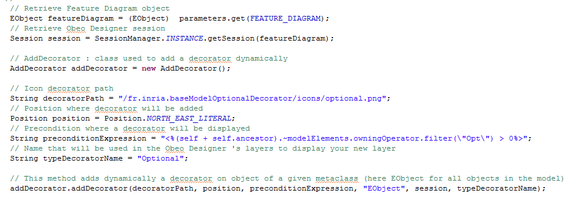

Build date: 17-October-2011
Abstract
This documentation presents the technical documentation of a base model decorator in association with a feature diagram editor. This feature diagram editor permit to model variability of a given architecture model (base model) on a variability model (here feature model). The aim of the base model decorator is to add a graphical decorator on Domain Model Elements from base model added on an optional feature in the base model modeler. This base model decorator tool and feature diagram editor take part of the ANR Project MOVIDA.
Table of Contents
Feature models are a way to add variability on models. By variability, we mean to model common and variable parts of a given architecture. An example of use of variability is given by Software Product Line (SPL) which consists in derive different family of products according to their similarities and differences. Another use is to model different software architecture possible choices. The aim of the Generic Decorator Engine is adding variability information on the base model modeler by adding a decorator on Domain Model Elements. For more information about it please refer to the sample wink video .
Please also refer to end-user documentation .
To install Base Model Decorator Engine you need to select the Feature Diagram Editor category on the Movida Studio update site and all of its dependencies and select Base Model Decorator for Flow Model. In this case, Base Model Decorator Engine is dependant from Feature Diagram Editor.
Derivation tests are available on the project fr.inria.featureDiagramEditor.flow.demo. To retrieve this project go to File-> New -> Example ->Generic Decorator Sample -> Sample . Then you can click on the session files (.aird) and open it. If it does not work, select Viewpoint Selection and click on Design.
This section presents how to create a new generic decorator.
To create a generic decorator you need to retrieve a session that contains a feature diagram. This can be made by creating a new Obeo Designer viewpoint example that extends the feature Diagram editor that enables a popup menu. This popup menu retrieve the current session and add the new decorator. It must have fr.inria.generic_decorator.core has on of its dependencies and call the class AddDecorator.
Then this popup menu will contains a code to call the creation of the new decorator such as in the following figure :
